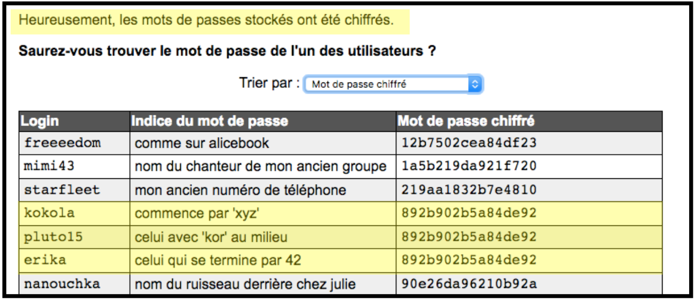
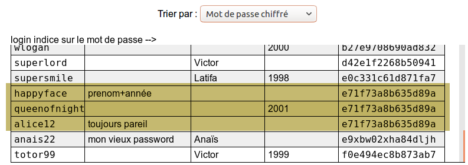

Un site web mal sécurisé a rendu une partie de sa base de données accessible à tous.
Elle ne contient pas les mots de passe des utilisateurs, mais leurs logins et l'indice qu'ils ont fourni pour se souvenir du mot de passe.
Elle contient le login des utilisateurs et l'indice qu'ils ont fourni pour se souvenir du mot de passe.
Elle contient des informations sur les utilisateurs.
Heureusement, les mots de passes stockés ont été chiffrés.
Saurez-vous trouver le mot de passe de l'un des utilisateurs ?
Trier par :
login
indice sur le mot de passe
Solution
La plupart des indices sont inutilisables :
numero de telephone -- impossible à deviner car on ne connaît pas son vrai nom
noté page 428 de mon livre -- impossible à trouver car on ne connaît pas son livre préféré
...
La situation est différente pour "mon jour de la semaine préféré" où le nombre de possibilités est faible : 7 mots de passe à essayer. Le nombre est en fait plus petit car le mot de passe a au moins 8 lettres donc il reste mercredi, vendredi et dimanche. On les essaie tous et on trouve la solution : vendredi.
C'est de la crypto !
Cet exercice montre comment certains indices sont trop précis et permettent aux hackeurs de retrouver le mot de passe. C'est pour cette raison que beaucoup de sites ne proposent plus de choisir un indice ou une question pour retrouver son mot de passe.

Chaque utilisateur a choisi un indice qui ne compromet pas la sécurité de son mot de passe. Le problème est que plusieurs personnes ont utilisé le même. Pour trouver les doublons on trie la liste selon le mot de passe chiffré. Comme kokola, pluto15 et erika utilisent le même mot de passe, celui chiffré par 892b902b5a84de92, on sait que celui-ci
commence par "xyz",
a "kor" au milieu,
finit par "42".
Le mot de passe de kokola est donc xyzkor42.

Chaque utilisateur a choisi un indice qui ne compromet pas la sécurité de son mot de passe. Le problème est que plusieurs personnes ont utilisé le même. Pour trouver les doublons on trie la liste selon le mot de passe chiffré. Parmi les doublons, le plus intéressant est le trio happyface, queenofnight et alice12. En effet, le mot de passe est de la forme prénom+année, il est utilisé par quelqu'un qui s'appelle Alice et par quelqu'un qui est née en 2001. Le mot de passe de happyface est alors alice2001.
C'est de la crypto !
En 2013 plusieurs des dizaines de milliers de mots de passe ont été dérobés. Afin de rassurer ses clients la companie affectée a communiqué que les mots de passe ont été chiffrés (plus exactement hachés), ce qui suggère que les comptes sont encore sécurisés. Ce n'est pas le cas car, comme vu dans l'exercice, le chiffrement des mots de passe était erroné car il chiffrait de la même manière les mots de passe identiques.
Pour ne pas répéter cette erreur, les gérants des bases de mots de passe doivent chiffrer non pas les mots de passe mais la paire login-mot de passe. On dit qu'on a ajouté du sel au mot de passe.